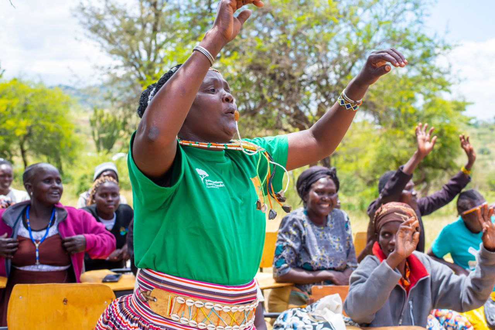
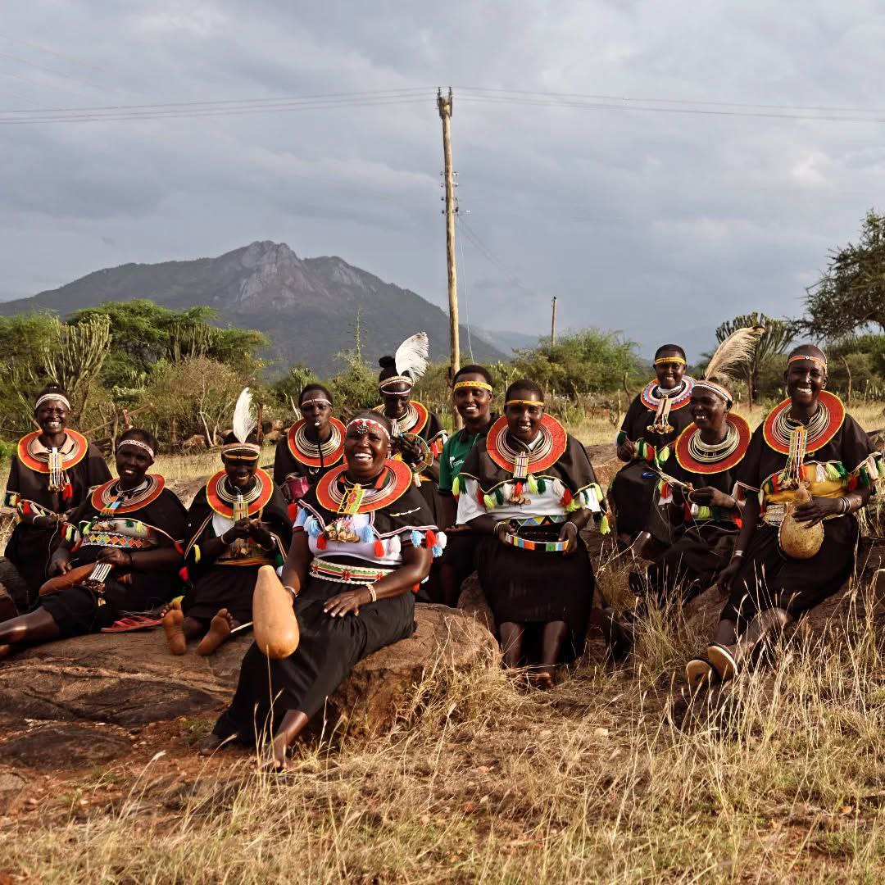

Interrupted education
Pastoralist mobility, poverty, and distance can keep children out of consistent learning environments.

GRACE exists to help children and girls in West Pokot grow up safe, supported, and able to access the opportunities they deserve.
West Pokot County faces serious barriers affecting children, especially girls. These include interrupted schooling, harmful practices such as early marriage and FGM, weak safeguarding systems, and the wider effects of poverty, remoteness, and mobility.
GRACE responds by working closely with families, schools, youth, faith leaders, and community structures to build practical protection systems and expand pathways to learning and wellbeing.
A just and inclusive society where every child grows up protected, empowered, and thriving.
To protect and promote children's rights through community-based action and advocacy.
Pastoralist mobility, poverty, and distance can keep children out of consistent learning environments.
Many communities need stronger referral pathways, safeguarding awareness, and trusted reporting systems.
Girls remain at risk of harmful norms that limit safety, education, and voice in community life.
Children and caregivers often need psychosocial, nutrition, and broader wellbeing support.
Sustainable change depends on trusted local actors who can lead, monitor, and champion child rights.
There is strong potential for collaboration with schools, county actors, NGOs, and donors to deepen impact.

Executive Director
Programs Manager
Child Protection Lead
We work best with partners who care about child safety, dignity, girls' education, and sustainable community-led systems. The website now reflects that more clearly.
Community-rooted identity and visible service focus in West Pokot.
Grounded in contextPrograms are presented in a way donors and collaborators can quickly understand.
Proposal-friendly positioningPartners can now move quickly from interest to direct outreach.
Faster next steps